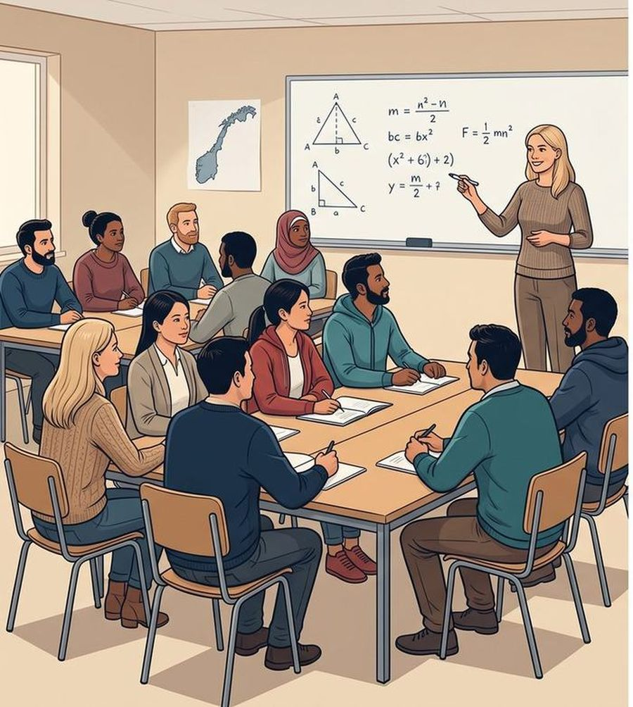
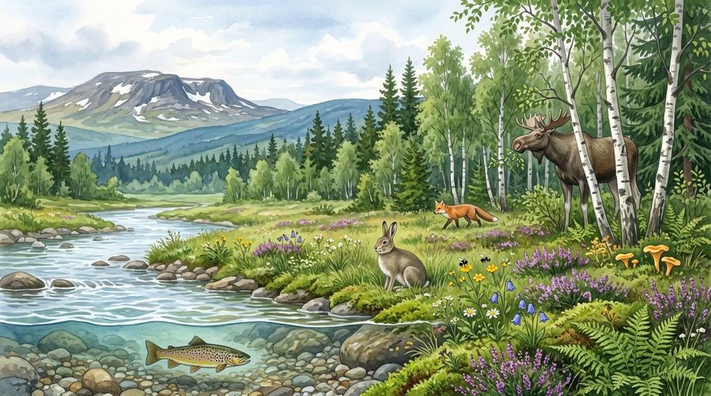

Matematikk
Tall, brøk og prosent, likninger, geometri, statistikk og økonomi – med regning fra hverdagen.
11 kapitler · 1040 oppgaver · 239 oppgaver på skjerm
Læreplan: Matematikk – forberedende opplæring for voksne (MAT10-01) ↗
Nettsted for voksne, fremmedspråklige deltakere i forberedende opplæring for voksne. Komplette lærebøker med forklaringer, eksempler, oppgaver på fire nivåer og ordhjelp på flere språk. Læreverket er basert på kompetansemålene fra Utdanningsdirektoratet (Udir) i læreplanene for forberedende opplæring for voksne: MAT10-01, NAT03-01 og SAF03-01.

Tall, brøk og prosent, likninger, geometri, statistikk og økonomi – med regning fra hverdagen.
11 kapitler · 1040 oppgaver · 239 oppgaver på skjerm
Læreplan: Matematikk – forberedende opplæring for voksne (MAT10-01) ↗

Økologi, kroppen, kjemi, evolusjon, helse og energi – med forsøk ute og inne.
8 kapitler · 1336 oppgaver · 143 oppgaver på skjerm
Læreplan: Naturfag – forberedende opplæring for voksne (NAT03-01) ↗
Kildekritikk, demokrati og historie, kultur, arbeidsliv, bærekraft og konflikter.
7 kapitler · 1142 oppgaver · 95 oppgaver på skjerm
Læreplan: Samfunnsfag – forberedende opplæring for voksne (SAF03-01) ↗
Læreverket bygger på kompetansemålene i læreplanene for forberedende opplæring for voksne. Målene står ordrett slik Udir har skrevet dem – trykk på en modul for å se dem.
Les kapitlene på skjermen, eller bla i boka med de samme sidetallene som i papirboka.
Oppgaver du klikker, drar og sorterer – du ser med en gang om svaret er riktig.
Slå opp vanskelige ord og fagord, med forklaring på enkel norsk og på flere språk.
Hør teksten lest høyt, og se filmer og lenker som læreren har valgt ut under «Ressurser».